Python Data Science Handbook Notes
Table of Contents
- 1. IPython
- 2. NumPy
- 3. Pandas
- 4. Matplotlib
- 4.1. MATLAB-style interface
- 4.2. Object-oriented interface
- 4.3. Line plot
- 4.4. Scatter plots
- 4.5. Visualizing errors
- 4.6. Visualizing three-dimensional function with
contour()andimshow() - 4.7. Histograms, Binnings, and Density
- 4.8. Subplots arrangement
- 4.9. Arrows and annotation
- 4.10. 3D plots
- 4.11. TODO Geographics data with Basemap
1 IPython
1.1 Emacs
1.1.1 Completion on Windows
To get Emacs Python shell completion on Windows, install pyreadline. Then it just works.
1.1.2 Disable pager in Emacs
put this in ${HOME}/.ipython/profile_default/startup/no-pager.py
from __future__ import print_function def page_printer(data, start=0, screen_lines=0, pager_cmd=None): if isinstance(data, dict): data = data['text/plain'] print(data) import os TERM = os.environ.get('TERM', 'unknown') if TERM in ['emacs', 'dumb', 'xterm-color']: get_ipython().hooks.show_in_pager = page_printer
1.1.3 Format DataFrame as org table
put this in ${HOME}/.ipython/profile_default/startup/org-formatter.py
import IPython, sys from tabulate import tabulate class OrgFormatter(IPython.core.formatters.BaseFormatter): def __call__(self, obj): try: if 'pandas' in sys.modules: import pandas as pd else: return None if (type(obj) == pd.core.frame.DataFrame): return tabulate(obj, headers='keys', tablefmt='orgtbl') except: return None ip = get_ipython() ip.display_formatter.formatters['text/org'] = OrgFormatter()
1.2 Shell commands
All shell commands can be used with ! prefix. Results can be assigned to
python variables. ! functions run in temporary shell. % magic
functions has permanent effect. Many % magic functions can be used without
%, these are called automagic functions.
files = !ls
files
['gistemp250.nc', 'notes.html', 'notes.org', 'obipy']
1.3 Debugger
%debug to enter debugger on last exception
1.4 Timing
%timeit- one line, may run multiple times for short functions%%timeit- works for multiple code lines, may run multple times%time- only run one time%%time- only run one time, multi line cell%prun- profile function call
2 NumPy
2.1 Array creating functions
np.zeros(10, dtype=int)np.ones((3,5), dtype=float)np.full((3,5), 3.14)np.arange(0, 20, 2)np.linspace(0, 1, 5)np.random.random((3, 3))np.random.normal(0, 1, (3, 3))normally distributed random valuesnp.random.randint(0, 10, (3, 3))np.eye(3)3x3 identity matrixnp.empty(3)uninitialized array
2.2 Array attributes
x3 = np.random.randint(10, size=(3, 4, 5)) print("x3 ndim", x3.ndim) # dimension print("x3 shape", x3.shape) # shape print("x3 size", x3.size) # total elements print("x3 dtype", x3.dtype) # array type print("x3 itemsize", x3.itemsize) # bytes per item print("x3 nbytes", x3.nbytes) # total bytes
x3 ndim 3 x3 shape (3, 4, 5) x3 size 60 x3 dtype int32 x3 itemsize 4 x3 nbytes 240
2.3 Array slicing
Slicing returns a view into the original. No copy is made.
x2 = np.random.randint(10, size=(3, 4))
x2
array([[7, 4, 4, 2],
[5, 9, 2, 1],
[6, 9, 2, 3]])
Extract 2x2
x2[:2, :2]
array([[7, 4],
[5, 9]])
Reverse
x2[::-1, ::-1]
array([[3, 2, 9, 6],
[1, 2, 9, 5],
[2, 4, 4, 7]])
Get column
x2[:, 0]
array([7, 5, 6])
Get row
x2[0, :]
array([7, 4, 4, 2])
To make a copy, use .copy()
x2[:2, :2].copy()
array([[7, 4],
[5, 9]])
2.4 Change dimension
With .reshape()
x = np.array([1,2,3]) x.reshape((1,3)) # make row vector
array([[1, 2, 3]])
x.reshape((3,1)) # make column vector
array([[1],
[2],
[3]])
Or with np.newaxis
x[np.newaxis, :]
array([[1, 2, 3]])
x[:, np.newaxis]
array([[1],
[2],
[3]])
2.5 Merging and splitting
Merging with np.concatenate(), np.vstack(), np.hstack()
np.concatenate([x2, x2]) # or np.vstack()
array([[7, 4, 4, 2],
[5, 9, 2, 1],
[6, 9, 2, 3],
[7, 4, 4, 2],
[5, 9, 2, 1],
[6, 9, 2, 3]])
np.concatenate([x2, x2], axis=1) # or np.hstack()
array([[7, 4, 4, 2, 7, 4, 4, 2],
[5, 9, 2, 1, 5, 9, 2, 1],
[6, 9, 2, 3, 6, 9, 2, 3]])
Split with np.split() , np.hsplit() , np.vsplit()
x = [1, 2, 3, 99, 99, 3, 2, 1] np.split(x, [3, 5]) # pass a list of split points
[array([1, 2, 3]), array([99, 99]), array([3, 2, 1])]
2.6 Specify output container
To avoid creating temporaries.
x = np.arange(5) y = np.empty(5) np.multiply(x, 10, out=y) y
array([ 0., 10., 20., 30., 40.])
This can even be used with array views. For example, we can write the results of a computation to every other element of a specified array:
y = np.zeros(10)
np.power(2, x, out=y[::2])
y
array([ 1., 0., 2., 0., 4., 0., 8., 0., 16., 0.])
2.7 reduce() and accumulate()
ufuncs supports reduce() and accumulate()
reduce() computes a final result.
x = np.arange(1, 6) np.add.reduce(x)
15
accumulate() saves all intermediate results.
np.add.accumulate(x)
array([ 1, 3, 6, 10, 15], dtype=int32)
2.8 Sort and index sort
np.sort() returns new copy of sorted array.
x.sort() sorts x in place.
np.argsort() returns sorted index array.
x = np.array([2,1,4,3,5])
np.sort(x)
array([1, 2, 3, 4, 5])
np.argsort(x)
array([1, 0, 3, 2, 4], dtype=int64)
2.9 Example: k-Nearest Neighbors
https://jakevdp.github.io/PythonDataScienceHandbook/02.08-sorting.html
- Create 10 random points.
- Compute the distance between each pair of points.
- Take the 2 left most columns.
np.random.seed(42) X = np.random.rand(10, 2) dist_sq = np.sum((X[:, np.newaxis, :] - X[np.newaxis, :, :]) ** 2, axis=-1) K = 2 nearest_partition = np.argpartition(dist_sq, K + 1, axis=1) plt.scatter(X[:, 0], X[:, 1], s=100) for i in range(X.shape[0]): for j in nearest_partition[i, :K+1]: # plot a line from X[i] to X[j] # use some zip magic to make it happen: plt.plot(*zip(X[j], X[i]), color='black')

3 Pandas
3.1 Series
Series is like strong typed dictionary.
Series supports indexing with keys: data['b']
And checking presence with operator in: 'a' in data
3.1.1 Constructing
data can be a scalar, which is repeated to fill the specified index:
pd.Series(5, index=[100, 200, 300])
100 5 200 5 300 5 dtype: int64
data can be a dictionary:
pd.Series({2:'a', 1:'b', 3:'c'})
1 b 2 a 3 c dtype: object
Explicitly specify index:
pd.Series({2:'a', 1:'b', 3:'c'}, index=[3, 2])
3 c 2 a dtype: object
In above example, 'b' is dropped, as 1 is not in the index.
3.2 DataFrame
Similar to Series, but 2D, where both rows and columns have generalized index.
It can be seen as a dictionary of column names to series.
Assume we have this DataFrame:
area = pd.Series({'California': 423967, 'Texas': 695662, 'New York': 141297, 'Florida': 170312, 'Illinois': 149995}) pop = pd.Series({'California': 38332521, 'Texas': 26448193, 'New York': 19651127, 'Florida': 19552860, 'Illinois': 12882135}) data = pd.DataFrame({'area':area, 'pop':pop}) data
area pop
California 423967 38332521
Florida 170312 19552860
Illinois 149995 12882135
New York 141297 19651127
Texas 695662 26448193
Access columns like dictionary:
data['area'] # or just data.area
California 423967 Florida 170312 Illinois 149995 New York 141297 Texas 695662 Name: area, dtype: int64
Never assign columns via attribute syntax. For example, use data['pop'] = z
rather than data.pop = z. Otherwise it can overwrite method names.
Adding new column:
data['density'] = data['pop'] / data['area'] data
area pop density
California 423967 38332521 90.413926
Florida 170312 19552860 114.806121
Illinois 149995 12882135 85.883763
New York 141297 19651127 139.076746
Texas 695662 26448193 38.018740
3.2.1 Indexing DataFrames
Indexing as NumPy array:
data.iloc[:3, :2]
area pop
California 423967 38332521
Florida 170312 19552860
Illinois 149995 12882135
Indexing with column and row names:
data.loc[:'Illinois', :'pop']
area pop
California 423967 38332521
Florida 170312 19552860
Illinois 149995 12882135
While indexing refers to columns, slicing refers to rows:
data['Florida':'Illinois']
area pop density
Florida 170312 19552860 114.806121
Illinois 149995 12882135 85.883763
Such slices can also refer to rows by number rather than by index::
data[1:3]
area pop density
Florida 170312 19552860 114.806121
Illinois 149995 12882135 85.883763
3.2.2 Operations
All NumPy ufuncs work on Series and DataFrames, and indexes are preserved.
df = pd.DataFrame(np.random.randint(0, 10, (3, 4)), columns=['A', 'B', 'C', 'D']) np.sin(df * np.pi / 4)
A B C D
0 7.071068e-01 1.000000e+00 -1.000000e+00 0.707107
1 -2.449294e-16 1.000000e+00 1.224647e-16 1.000000
2 -1.000000e+00 1.224647e-16 -2.449294e-16 -1.000000
Pandas automatically aligns indexes, and fills missing data with NaN
area = pd.Series({'Alaska': 1723337, 'Texas': 695662, 'California': 423967}, name='area') population = pd.Series({'California': 38332521, 'Texas': 26448193, 'New York': 19651127}, name='population') population / area
Alaska NaN California 90.413926 New York NaN Texas 38.018740 dtype: float64
This works because the resulting array contains the union of the indices of the inputs:
area.index | population.index
Index(['Alaska', 'California', 'New York', 'Texas'], dtype='object')
We can change the fill value: A.add(B, fill_value=0)
| Python Operator | Pandas Method(s) |
|---|---|
| + | add() |
| - | sub(), subtract() |
| * | mul(), multiply() |
| // | floordiv() |
| % | mod() |
| ** | pow() |
Operations between DataFrame and Series are by default by rows. To make it work by columns, use the above functions and specify axis (0=column, 1= row)
df = pd.DataFrame(np.random.randint(10, size=(3, 4)), columns=list('QRST')) #df - df.iloc[0] # first row becomes 0, other rows minus row0 #df - df.Q # this is not what you think df.subtract(df['Q'], axis=0)
Q R S T 0 0 2 7 0 1 0 -1 0 -5 2 0 2 5 6
3.3 Missing data
NaN is often used. NumPy has functions to work on them.
vals2 = np.array([1, np.nan, 3, 4])
np.nansum(vals2), np.nanmin(vals2), np.nanmax(vals2)
(8.0, 1.0, 4.0)
Pandas auto cast data to float when it needs to use NaN to represent missing data.
x = pd.Series(range(2), dtype=int) x[0] = None x
0 NaN 1 1.0 dtype: float64
| Typeclass | Conversion When Storing NAs | NA Sentinel Value |
|---|---|---|
| floating | No change | np.nan |
| object | No change | None or np.nan |
| integer | Cast to float64 | np.nan |
| boolean | Cast to object | None or np.nan |
Pandas functions for NaN (or None, they are interchangeable in Pandas)
isnull(): Generate a boolean mask indicating missing valuesnotnull(): Opposite of isnull()dropna(): Return a filtered version of the data- Can drop entire row or column with 'axis'
- Can set threshold of dropping row or column with 'thresh'
fillna(): Return a copy of the data with missing values filled or imputed- Can forward fill with
method='ffill'and back fill withmethod='bfill'
- Can forward fill with
3.4 Hierarchical Indexing
index = [('California', 2000), ('California', 2010), ('New York', 2000), ('New York', 2010), ('Texas', 2000), ('Texas', 2010)] populations = [33871648, 37253956, 18976457, 19378102, 20851820, 25145561] pop = pd.Series(populations, index=index) index = pd.MultiIndex.from_tuples(index) pop = pop.reindex(index) pop
California 2000 33871648
2010 37253956
New York 2000 18976457
2010 19378102
Texas 2000 20851820
2010 25145561
dtype: int64
Unstack the last index column to create a new dimension
pop_df = pop.unstack()
pop_df
2000 2010
California 33871648 37253956
New York 18976457 19378102
Texas 20851820 25145561
Each extra level in a multi-index represents an extra dimension of data
This allows us to easily and quickly manipulate and explore even high-dimensional data.
pop_df = pd.DataFrame({'total': pop, 'under18': [9267089, 9284094, 4687374, 4318033, 5906301, 6879014]}) f_u18 = pop_df['under18'] / pop_df['total'] f_u18.unstack()
2000 2010
California 0.273594 0.249211
New York 0.247010 0.222831
Texas 0.283251 0.273568
Multi index levels can have names
pop.index.names = ['state', 'year'] pop
state year
California 2000 33871648
2010 37253956
New York 2000 18976457
2010 19378102
Texas 2000 20851820
2010 25145561
dtype: int64
Columns can have multiindex too
# hierarchical indices and columns index = pd.MultiIndex.from_product([[2013, 2014], [1, 2]], names=['year', 'visit']) columns = pd.MultiIndex.from_product([['Bob', 'Guido', 'Sue'], ['HR', 'Temp']], names=['subject', 'type']) # mock some data data = np.round(np.random.randn(4, 6), 1) data[:, ::2] *= 10 data += 37 # create the DataFrame health_data = pd.DataFrame(data, index=index, columns=columns) health_data
subject Bob Guido Sue
type HR Temp HR Temp HR Temp
year visit
2013 1 45.0 35.8 39.0 35.0 24.0 37.2
2 44.0 37.2 36.0 36.7 22.0 36.3
2014 1 32.0 38.1 40.0 35.2 40.0 36.6
2 30.0 37.6 47.0 37.9 29.0 36.7
This is fundamentally four-dimensional data.
The screen is 2D, Pandas can only present data in 2D on the screen.
stack() and unstack() essentially moves index between row and column, to project the data to 2D in different ways.
Multiindex levels can be used for data aggregation.
health_data.mean(level='visit')
subject Bob Guido Sue type HR Temp HR Temp HR Temp visit 1 38.5 36.95 39.5 35.1 32.0 36.9 2 37.0 37.40 41.5 37.3 25.5 36.5
Also by column:
health_data.mean(axis=1, level='type')
type HR Temp
year visit
2013 1 36.000000 36.000000
2 34.000000 36.733333
2014 1 37.333333 36.633333
2 35.333333 37.400000
3.5 Merge and join
Pandas automatically recognize overlapping columns
df1 = pd.DataFrame({'employee': ['Bob', 'Jake', 'Lisa', 'Sue'], 'group': ['Accounting', 'Engineering', 'Engineering', 'HR']}) df2 = pd.DataFrame({'employee': ['Lisa', 'Bob', 'Jake', 'Sue'], 'hire_date': [2004, 2008, 2012, 2014]}) pd.merge(df1, df2)
employee group hire_date 0 Bob Accounting 2008 1 Jake Engineering 2012 2 Lisa Engineering 2004 3 Sue HR 2014
Merge key can be explicitly specified:
pd.merge(df1, df2, on='employee')
If column names differ, use left_on and right_on to specify the columns.
df3 = pd.DataFrame({'name': ['Bob', 'Jake', 'Lisa', 'Sue'], 'salary': [70000, 80000, 120000, 90000]}) # drop() to remove the duplicated column pd.merge(df1, df3, left_on="employee", right_on="name").drop("name", axis=1)
employee group salary 0 Bob Accounting 70000 1 Jake Engineering 80000 2 Lisa Engineering 120000 3 Sue HR 90000
merge() can use indices too:
pd.merge(df1, df2, left_index=True, right_index=True)
But for convenience, use join(), which performs merge that defaults to joining on indices.
3.5.1 Specifying Set Arithmetic for Joins
By default, merge produces intersection of the inputs(inner join)
df6 = pd.DataFrame({'name': ['Peter', 'Paul', 'Mary'], 'food': ['fish', 'beans', 'bread']}, columns=['name', 'food']) df7 = pd.DataFrame({'name': ['Mary', 'Joseph'], 'drink': ['wine', 'beer']}, columns=['name', 'drink']) pd.merge(df6, df7)
name food drink 0 Mary bread wine
To make a outer join, use the how keyword (how can also be left or
right):
pd.merge(df6, df7, how='outer')
name food drink
0 Peter fish NaN
1 Paul beans NaN
2 Mary bread wine
3 Joseph NaN beer
3.6 Aggregation and grouping
Use the seaborn planets dataset as example
import seaborn as sns planets = sns.load_dataset('planets') planets.shape
(1035, 6)
DataFrame has convenience method describe(), that computes several common
aggregates for each column.
planets.dropna().describe()
number orbital_period mass distance year
count 498.00000 498.000000 498.000000 498.000000 498.000000
mean 1.73494 835.778671 2.509320 52.068213 2007.377510
std 1.17572 1469.128259 3.636274 46.596041 4.167284
min 1.00000 1.328300 0.003600 1.350000 1989.000000
25% 1.00000 38.272250 0.212500 24.497500 2005.000000
50% 1.00000 357.000000 1.245000 39.940000 2009.000000
75% 2.00000 999.600000 2.867500 59.332500 2011.000000
max 6.00000 17337.500000 25.000000 354.000000 2014.000000
Other built-in Pandas aggregations:
| Aggregation | Description |
|---|---|
| count() | Total number of items |
| first(), last() | First and last item |
| mean(), median() | Mean and median |
| min(), max() | Minimum and maximum |
| std(), var() | Standard deviation and variance |
| mad() | Mean absolute deviation |
| prod() | Product of all items |
| sum() | Sum of all items |
3.6.1 GroupBy
The GroupBy object can be seen as a collection of ~DataFrame~s
planets.groupby('method')['orbital_period'].median()
method Astrometry 631.180000 Eclipse Timing Variations 4343.500000 Imaging 27500.000000 Microlensing 3300.000000 Orbital Brightness Modulation 0.342887 Pulsar Timing 66.541900 Pulsation Timing Variations 1170.000000 Radial Velocity 360.200000 Transit 5.714932 Transit Timing Variations 57.011000 Name: orbital_period, dtype: float64
The GroupBy object supports iteration over groups:
for (method, group) in planets.groupby('method'): print("{0:30s} shape={1}".format(method, group.shape))
Astrometry shape=(2, 6) Eclipse Timing Variations shape=(9, 6) Imaging shape=(38, 6) Microlensing shape=(23, 6) Orbital Brightness Modulation shape=(3, 6) Pulsar Timing shape=(5, 6) Pulsation Timing Variations shape=(1, 6) Radial Velocity shape=(553, 6) Transit shape=(397, 6) Transit Timing Variations shape=(4, 6)
The GroupBy object pass through methods to its groups:
planets.groupby('method')['year'].describe()
count mean std min 25% \
method
Astrometry 2.0 2011.500000 2.121320 2010.0 2010.75
Eclipse Timing Variations 9.0 2010.000000 1.414214 2008.0 2009.00
Imaging 38.0 2009.131579 2.781901 2004.0 2008.00
Microlensing 23.0 2009.782609 2.859697 2004.0 2008.00
Orbital Brightness Modulation 3.0 2011.666667 1.154701 2011.0 2011.00
Pulsar Timing 5.0 1998.400000 8.384510 1992.0 1992.00
Pulsation Timing Variations 1.0 2007.000000 NaN 2007.0 2007.00
Radial Velocity 553.0 2007.518987 4.249052 1989.0 2005.00
Transit 397.0 2011.236776 2.077867 2002.0 2010.00
Transit Timing Variations 4.0 2012.500000 1.290994 2011.0 2011.75
50% 75% max
method
Astrometry 2011.5 2012.25 2013.0
Eclipse Timing Variations 2010.0 2011.00 2012.0
Imaging 2009.0 2011.00 2013.0
Microlensing 2010.0 2012.00 2013.0
Orbital Brightness Modulation 2011.0 2012.00 2013.0
Pulsar Timing 1994.0 2003.00 2011.0
Pulsation Timing Variations 2007.0 2007.00 2007.0
Radial Velocity 2009.0 2011.00 2014.0
Transit 2012.0 2013.00 2014.0
Transit Timing Variations 2012.5 2013.25 2014.0
Filter out groups with filter()
df = pd.DataFrame({'A' : ['foo', 'bar', 'foo', 'bar', 'foo', 'bar'], 'B' : [1, 2, 3, 4, 5, 6], 'C' : [2.0, 5., 8., 1., 2., 9.]}) df.groupby('A').filter(lambda x: x['B'].mean() > 3.)
A B C
1 bar 2 5.0
3 bar 4 1.0
5 bar 6 9.0
Or more complex things with transform() and apply().
groupby() also accepts dictionary and python functions.
3.6.2 Pivot tables
Use titanic data set:
titanic = sns.load_dataset('titanic') titanic.head()
survived pclass sex age sibsp parch fare embarked class \
0 0 3 male 22.0 1 0 7.2500 S Third
1 1 1 female 38.0 1 0 71.2833 C First
2 1 3 female 26.0 0 0 7.9250 S Third
3 1 1 female 35.0 1 0 53.1000 S First
4 0 3 male 35.0 0 0 8.0500 S Third
who adult_male deck embark_town alive alone
0 man True NaN Southampton no False
1 woman False C Cherbourg yes False
2 woman False NaN Southampton yes True
3 woman False C Southampton yes False
4 man True NaN Southampton no True
Pivot table the manual way, two column groupby() then unstack():
titanic.groupby(['sex', 'class'])['survived'].mean().unstack()
class First Second Third sex female 0.968085 0.921053 0.500000 male 0.368852 0.157407 0.135447
Pivot table syntax:
titanic.pivot_table('survived', index='sex', columns='class')
class First Second Third sex female 0.968085 0.921053 0.500000 male 0.368852 0.157407 0.135447
Multi-level pivot tables:
age = pd.cut(titanic['age'], [0, 18, 80]) titanic.pivot_table('survived', ['sex', age], 'class')
class First Second Third
sex age
female (0, 18] 0.909091 1.000000 0.511628
(18, 80] 0.972973 0.900000 0.423729
male (0, 18] 0.800000 0.600000 0.215686
(18, 80] 0.375000 0.071429 0.133663
Multi-level column index:
fare = pd.qcut(titanic['fare'], 2) titanic.pivot_table('survived', ['sex', age], [fare, 'class'])
fare (-0.001, 14.454] (14.454, 512.329] \
class First Second Third First
sex age
female (0, 18] NaN 1.000000 0.714286 0.909091
(18, 80] NaN 0.880000 0.444444 0.972973
male (0, 18] NaN 0.000000 0.260870 0.800000
(18, 80] 0.0 0.098039 0.125000 0.391304
fare
class Second Third
sex age
female (0, 18] 1.000000 0.318182
(18, 80] 0.914286 0.391304
male (0, 18] 0.818182 0.178571
(18, 80] 0.030303 0.192308
Include totals in pivot_table() with margins
titanic.pivot_table('survived', index='sex', columns='class', margins=True)
class First Second Third All sex female 0.968085 0.921053 0.500000 0.742038 male 0.368852 0.157407 0.135447 0.188908 All 0.629630 0.472826 0.242363 0.383838
3.7 TODO Working with time (reread this)
4 Matplotlib
Matplotlib has two interfaces
- A MATLIB-style state-based interface
- And a more powerful object-oriented interface
Figure is a container of all objects (axes, graphics, text, labels)
Axes is a bounding box with ticks and labels, which will eventually contain the plot elements.
4.1 MATLAB-style interface
The MATLAB-style tools are contained in the pyplot interface.
This interface is stateful: it keeps track of the "current" figure and
axes. These can be acquired from plt.gcf() (current figure) and plt.gca()
(current axes)
x = np.linspace(0, 10, 100) plt.figure() # create a plot figure # create the first of two panels and set current axis plt.subplot(2, 1, 1) # (rows, columns, panel number) plt.plot(x, np.sin(x)) # create the second panel and set current axis plt.subplot(2, 1, 2) plt.plot(x, np.cos(x));
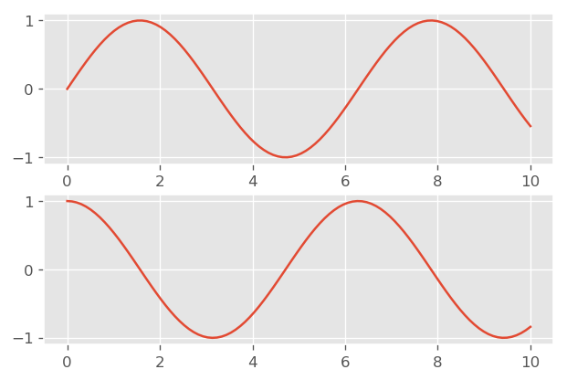
4.2 Object-oriented interface
Plotting functions are methods of explicit Figure and Axes objects.
# First create a grid of plots # ax will be an array of two Axes objects fig, ax = plt.subplots(2) # Call plot() method on the appropriate object ax[0].plot(x, np.sin(x)) ax[1].plot(x, np.cos(x));
4.3 Line plot
line style and color can be combined into a single non-keyword argument to
plt.plot()
plt.plot(x, x + 0, '-g') # solid green plt.plot(x, x + 1, '--c') # dashed cyan plt.plot(x, x + 2, '-.k') # dashdot black plt.plot(x, x + 3, ':r'); # dotted red
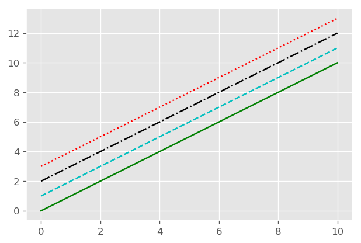
plot limits can be set with xlim() and ylim()
plt.plot(x, np.sin(x)) plt.xlim(-1, 11) plt.ylim(-1.5, 1.5);
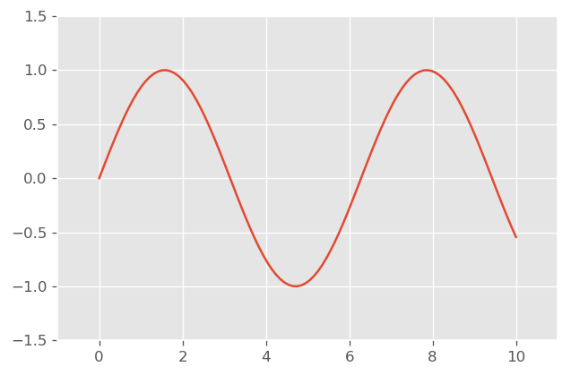
Reversing the order of the arguments makes axis to be displayed in reverse
plt.plot(x, np.sin(x)) plt.xlim(10, 0) plt.ylim(1.2, -1.2);
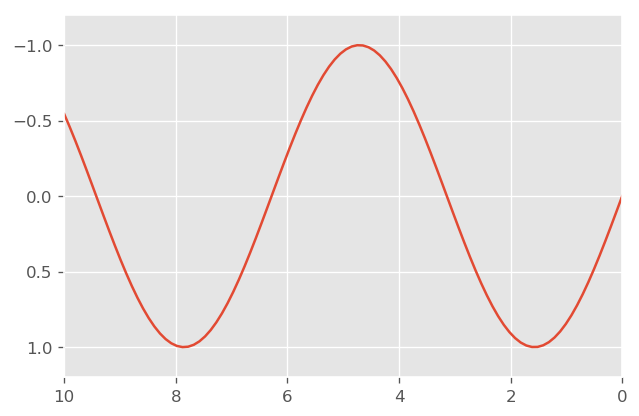
x and y limits can also be set with a single call plt.axis()
plt.plot(x, np.sin(x)) plt.axis([-1, 11, -1.5, 1.5]);
axis() can ensure 1:1 aspect ratio (one unit of x is equal to one unit of
y on screen) :
plt.plot(x, np.sin(x))
plt.axis('equal');
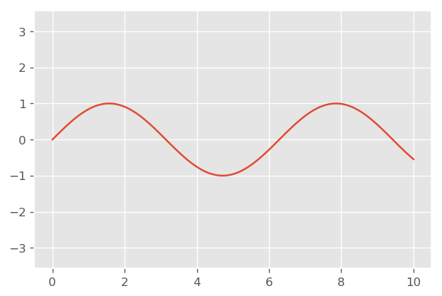
Add title with plt.title()
Add axis labels with plt.xlabel() and plt.ylabel()
Add legend by specifying label of each line with the label keyword, then
call plt.legend()
plt.plot(x, np.sin(x), '-g', label='sin(x)') plt.plot(x, np.cos(x), ':b', label='cos(x)') plt.legend();
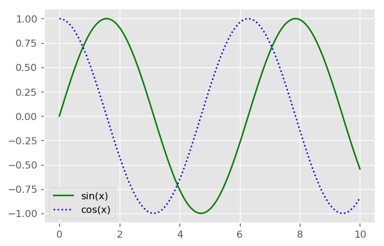
most plt functions translate directly to ax methods. But some are not for
MATLAB compatibility:
| plt.xlabel() | ax.setxlabel() |
| plt.ylabel() | ax.setylabel() |
| plt.xlim() | ax.setxlim() |
| plt.ylim() | ax.setylim() |
| plt.title() | ax.settitle() |
But it's usually more convenient to use ax.set() to set all properties at once:
ax = plt.axes() ax.plot(x, np.sin(x)) ax.set(xlim=(0, 10), ylim=(-2, 2), xlabel='x', ylabel='sin(x)', title='A Simple Plot');
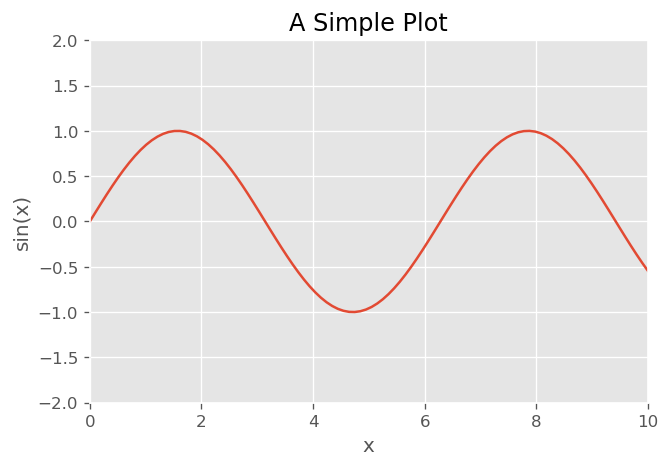
4.4 Scatter plots
Similar to line plot. Instead of points being joined by line segments, here the points are represented individually with dots.
There are many different markers to choose from:
rng = np.random.RandomState(0) for marker in ['o', '.', ',', 'x', '+', 'v', '^', '<', '>', 's', 'd', 'p', 'h']: plt.plot(rng.rand(5), rng.rand(5), marker, label="marker='{0}'".format(marker)) plt.legend(numpoints=1) plt.xlim(0, 1.8);
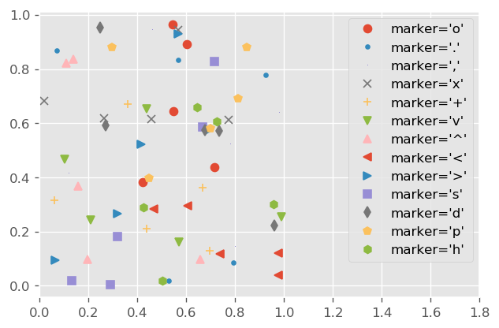
dots and lines can be combined:
x = np.linspace(0, 10, 30) y = np.sin(x) plt.plot(x, y, '-o');
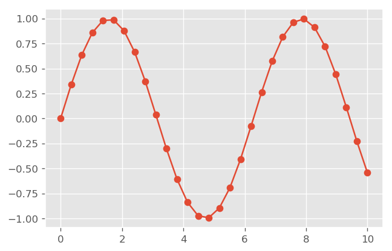
A more powerful method of creating scatter plots is plt.scatter(). It can
be used to create scatter plots where the properties of each point (size,
face color, edge color, etc.) can be individually controlled or mapped to
data.
rng = np.random.RandomState(0) x = rng.randn(100) y = rng.randn(100) colors = rng.rand(100) sizes = 1000 * rng.rand(100) plt.scatter(x, y, c=colors, s=sizes, alpha=0.3, cmap='viridis') plt.colorbar(); # show color scale
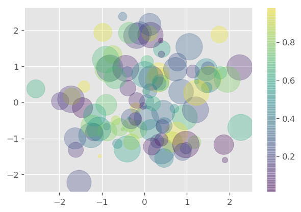
Color and size combined with X-Y let us explore four different dimension of the data at the same time:
For large datasets, plot() is more efficient than scatter()
4.5 Visualizing errors
Draw errorbars graph with plt.errorbar
x = np.linspace(0, 10, 50) dy = 0.8 y = np.sin(x) + dy * np.random.randn(50) plt.errorbar(x, y, yerr=dy, fmt='.');
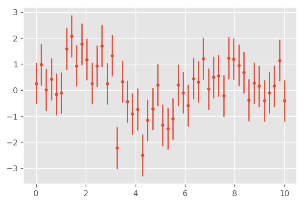
Show continues error with fill_between()
y = np.sin(x) + dy * np.random.randn(50) plt.plot(x, y, '-o'); plt.fill_between(x, y - 0.8, y+0.8, color='gray', alpha=0.2);
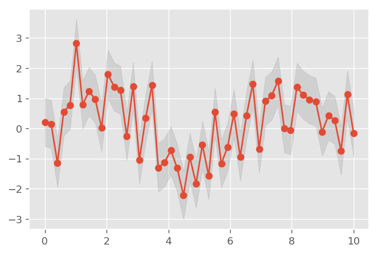
4.6 Visualizing three-dimensional function with contour() and imshow()
def f(x, y): return np.sin(x) ** 10 + np.cos(10 + y * x) * np.cos(x) x = np.linspace(0, 5, 50) y = np.linspace(0, 5, 40) X, Y = np.meshgrid(x, y) Z = f(X, Y) plt.contour(X, Y, Z, colors='black');
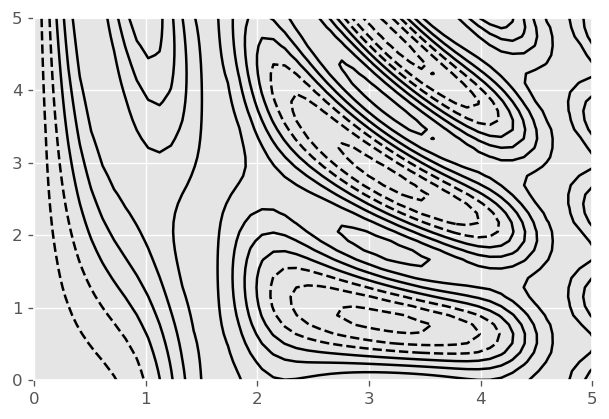
Or fill with color:
plt.contourf(X, Y, Z, 10); # 10 steps plt.colorbar(); # add legend
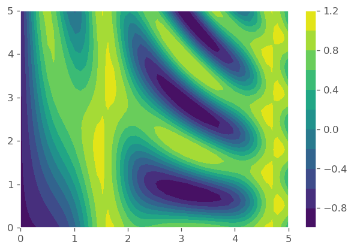
To get smooth image, use imshow()
plt.imshow(Z, extent=[0, 5, 0, 5], origin='lower')
plt.colorbar();
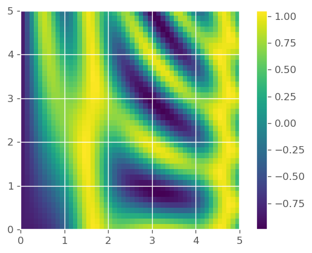
Combine contour and image, and add labels
plt.imshow(Z, extent=[0, 5, 0, 5], origin='lower', alpha=0.7) contours = plt.contour(X, Y, Z, 3, colors='black') plt.clabel(contours, inline=True, fontsize=8) plt.colorbar();
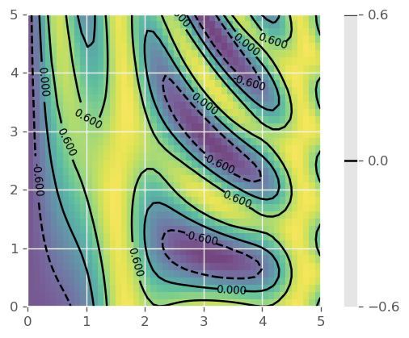
4.7 Histograms, Binnings, and Density
histtype='stepfilled' with some transparency alpha very useful when
comparing several histograms
x1 = np.random.normal(0, 0.8, 1000) x2 = np.random.normal(-2, 1, 1000) x3 = np.random.normal(3, 2, 1000) # density=True shows probability density (the area or integral under the # histogram will sum to 1.) kwargs = dict(histtype='stepfilled', alpha=0.3, density=True, bins=20) plt.hist(x1, **kwargs) plt.hist(x2, **kwargs) plt.hist(x3, **kwargs);
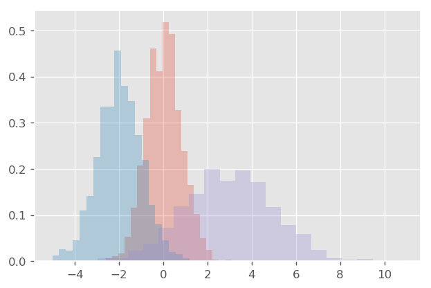
Two-dimensional histogram with plt.hist2d()
mean = [0, 0] cov = [[1, 1], [1, 2]] x, y = np.random.multivariate_normal(mean, cov, 10000).transpose() plt.hist2d(x, y, bins=30, cmap='Blues') cb = plt.colorbar() cb.set_label('counts in bin')
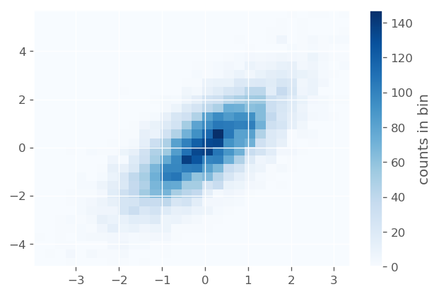
Hexagonal binnings
plt.hexbin(x, y, gridsize=30, cmap='Blues') cb = plt.colorbar(label='count in bin')
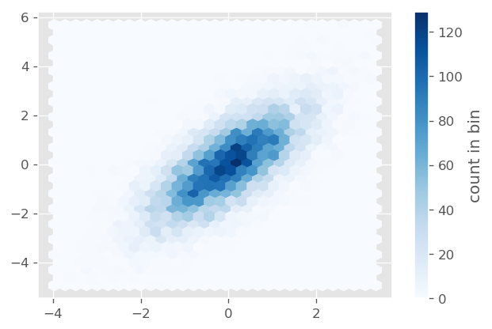
4.8 Subplots arrangement
grid = plt.GridSpec(2, 3, wspace=0.4, hspace=0.3)
plt.subplot(grid[0, 0])
plt.subplot(grid[0, 1:])
plt.subplot(grid[1, :2])
plt.subplot(grid[1, 2]);
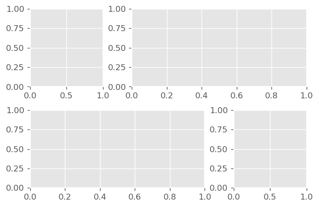
4.9 Arrows and annotation
Use plt.annotate() to add an arrow and some text
fig, ax = plt.subplots() x = np.linspace(0, 20, 1000) ax.plot(x, np.cos(x)) ax.axis('equal') ax.annotate('local maximum', xy=(6.28, 1), xytext=(10, 4), arrowprops=dict(facecolor='black', shrink=0.05)) # angel3 draws a quadratic bezier curve. It casts a ray from starting point in # the direction of angleA, and another ray from the end point in the direction # of angleB. The control point is at the intersection of the 2 rays. ax.annotate('local minimum', xy=(5 * np.pi, -1), xytext=(2, -6), arrowprops=dict(arrowstyle="->", edgecolor='black', connectionstyle="angle3,angleA=0,angleB=-60"));

4.10 3D plots
from mpl_toolkits import mplot3d
Once this module is imported, 3d axes can be created by passing
projection='3d'
from mpl_toolkits import mplot3d rng = np.random.RandomState(0) x = rng.randn(100) y = rng.randn(100) z = rng.randn(100) colors = rng.rand(100) ax = plt.axes(projection='3d') ax.scatter3D(x, y, z, c=colors, cmap='viridis');
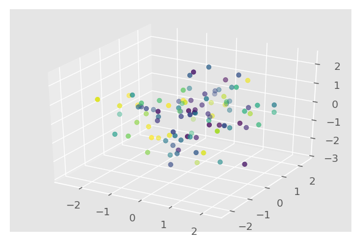
4.11 TODO Geographics data with Basemap
Basemap is difficult to install. Retry this chapter on a computer with Anaconda.